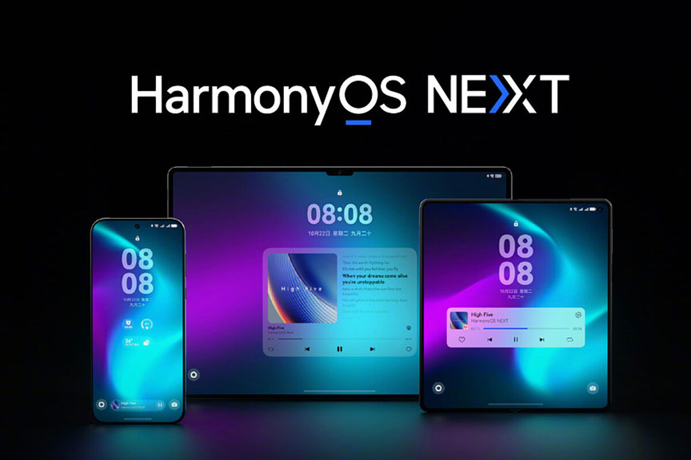
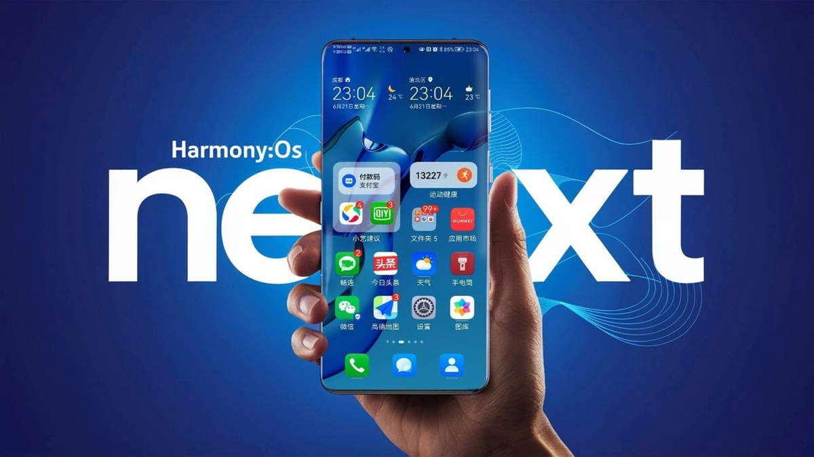
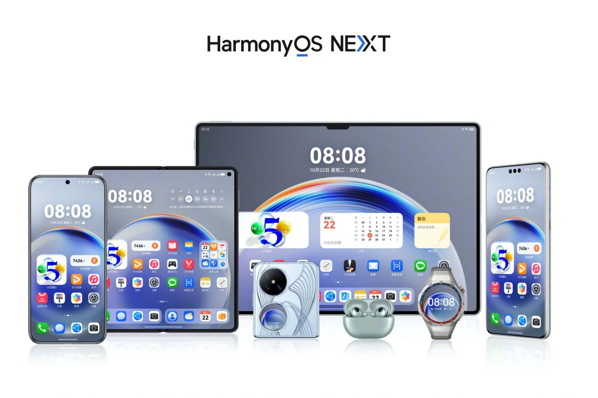

Sistemas Operativos Móviles

TRABAJO DE INVESTIGACIÓN
TRABAJO DE INVESTIGACIÓN
Harmony OS, desarrollado por Huawei, es un sistema operativo multiplataforma diseñado para ofrecer una experiencia unificada en diversos dispositivos, como smartphones, tablets, wearables, televisores inteligentes y más. A diferencia de sistemas como Android o iOS, Harmony OS se enfoca en la interconectividad y la integración fluida entre diferentes dispositivos dentro del ecosistema de Huawei. Esto permite una transferencia de datos y control de aplicaciones sin interrupciones, facilitando la interacción en tiempo real. Además, el sistema destaca por su arquitectura distribuida, que permite compartir recursos de hardware entre dispositivos conectados. Aunque inicialmente fue impulsado como una alternativa a Android debido a las restricciones comerciales, Harmony OS se ha posicionado como una solución innovadora para usuarios que buscan una experiencia tecnológica integrada y eficiente.
A diferencia de Android e iOS, que operan principalmente en sus respectivos ecosistemas de dispositivos móviles, Harmony OS apuesta por una arquitectura distribuida que rompe las barreras entre diferentes tipos de dispositivos. Mientras que Android destaca por su personalización y su amplia gama de dispositivos, e iOS por su integración y fluidez dentro del ecosistema Apple, Harmony OS busca combinar lo mejor de ambos mundos al permitir que los dispositivos compartan recursos y trabajen juntos como un sistema único. Por ejemplo, un usuario puede iniciar una tarea en su smartphone y continuarla sin problemas en un televisor o una tablet, algo que en Android e iOS depende más de aplicaciones específicas y no de una integración nativa del sistema operativo. Esta capacidad de interconectividad posiciona a Harmony OS como una opción innovadora en un mercado que busca cada vez más la convergencia tecnológica.
"Puede ser una opción eficaz para tener lo mejor de ambos mundos"
"Huawei parece haberse acercado a ese mismo hito, y una de las claves ha sido el lanzamiento de HarmonyOS NEXT. Este sistema operativo es la evolución de HarmonyOS, que en versiones preliminares seguía estando basada en AOSP, la versión de Android Open Source que cualquiera puede usar... pero que no incluye los servicios y aplicaciones de Google (incluidos Gmail, YouTube, Maps o la Play Store).
Sin embargo, HarmonyOS NEXT es un sistema operativo creado de cero, 100% propio y que acabará siendo adoptado por todo el ecosistema de dispositivos de Huawei. No solo móviles, sino también tabletas, relojes inteligentes e incluso auriculares. HarmonyOS NEXT no es compatible con aplicaciones Android. En lugar de eso, utiliza ejecutables compilados específicamente para esa plataforma y que además se apoyan en los llamados Huawei Mobile Services (HMS). La cifra de aplicaciones es por ahora muy modesta (15,000) pero si todo va como parece, ese número crecerá rápidamente en los próximos meses."(PASTOR, Javier)
"HarmonyOS NEXT: El futuro de Huawei"
Se puede mencionar que el principal objetivo de Harmony OS es la Unificación de acuerdo a su Página Web:
"Uno como todos, Todos como uno"
En donde se puede observar lo siguiente:
"Bienvenidos al nacimiento de HarmonyOS, el nuevo sistema operativo global inteligente de Huawei. Desbloquea nuevas capacidades en la comunicación entre dispositivos y disfruta de funciones innovadoras para un rendimiento superior en todos los aspectos, con una poderosa gestión de la seguridad."(PERÚ, Huawei)
De acuerdo a esta descripción, podemos concluir que Harmony OS no solo busca competir con Android e iOS, sino también redefinir la manera en que interactuamos con nuestros dispositivos. Su enfoque en la interconectividad y la experiencia unificada refleja una visión futurista donde la tecnología se adapta al usuario de forma fluida y sin interrupciones. Aunque aún está en proceso de consolidación en el mercado global, su capacidad para integrar diversos dispositivos bajo un mismo sistema operativo lo convierte en una propuesta interesante para quienes valoran la eficiencia y la simplicidad en su ecosistema tecnológico. Con el tiempo, Harmony OS podría establecer un nuevo estándar en la industria, desafiando los límites tradicionales de los sistemas operativos móviles.